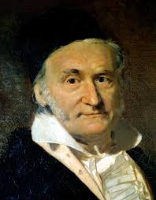

|
Before 1950's
Computation Method already knownComputation Tools
- Linear Interpolation
- Newton's Method
- Gaussian elimination
The need for large scale computation predates the invention of modern computers. After Computers' Invention The revolution was sparked by invention of computer.
- Hand computation
- Abacus
- Formula handbook and Data tables
These two effects generated a combined increase in speed of almost incomprehensible scale.
- By Moore's Law, the computational ability is increasing exponentially,doubling approximately every two years.
- Mathematics and algorithms have also developed after 1950s.
- Half a century on, numerical computation has grown into one of the largest branches of mathematics.
- Today, we have reached a point where most of the classical mathematical problems can be solved numerically to high accuracy.